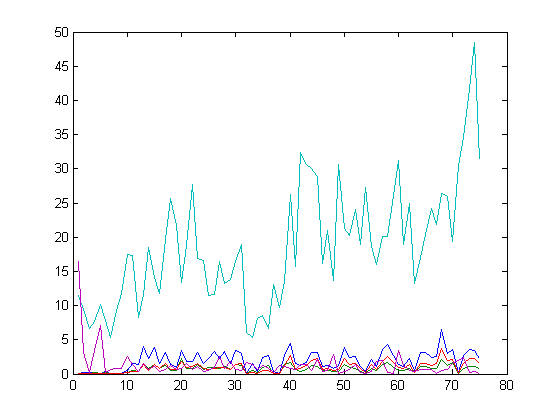
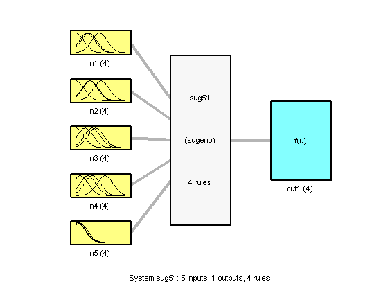
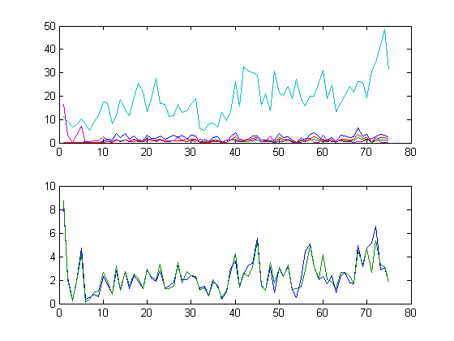
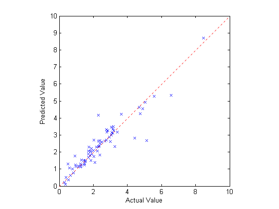
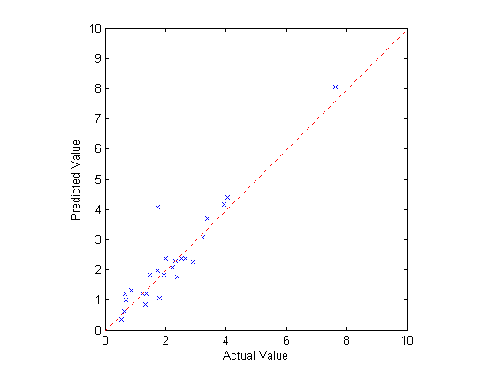

Model Identification
This is a demonstration of subtractive clustering and how it can be used with multi-dimensional data.
Copyright 1994-2002 The MathWorks, Inc. $Revision: 1.12 $
This is a plot of the input data for a model identification problem. We are interested in estimating the number of auto trips generated from an area based on the area's demographics. Five factors were considered: population, number of houses, vehicle ownership, income, and employment.
tripdata plot(datin)
Using the GENFIS2 function (which is based on the subtractive clustering algorithm in the SUBCLUST function), we generate a fuzzy inference system that calculates the output based on the five inputs.
a=genfis2(datin,datout,0.45); plotfis(a);
The upper plot displays 75 data points for the five input variables. The lower plot displays the corresponding outputs and the outputs predicted by the fuzzy model.
subplot(1,1,1) fuzout=evalfis(datin,a); subplot(2,1,1) plot(datin) subplot(2,1,2) plot([datout fuzout])
Warning: Implication method should be "prod" for Sugeno systems.
Here is a plot of the actual output values (X axis) versus the predicted output values (Y axis). If the prediction were a perfect one, the data points would lie right along the diagonal line X = Y.
subplot(1,1,1) plot(datout,fuzout,'bx',[0 10],[0 10],'r:') xlabel('Actual Value') ylabel('Predicted Value') axis square
We set aside 25 of the original 100 data points as checking data. Since we did not use this data to create our model, it is a useful measure of how good our model is.
chkfuzout=evalfis(chkdatin,a); plot(chkdatout,chkfuzout,'bx',[0 10],[0 10],'r:') axis square xlabel('Actual Value') ylabel('Predicted Value')
Warning: Implication method should be "prod" for Sugeno systems.
Clustering can be a very effective technique for dealing with large sets of data: the principal idea is to distill natural groupings of data from a large data set thereby allowing concise representation of a model's behavior. This demo has shown how accurate predictions can be made despite the multi-dimensional nature of the problem. With the results of this clustering experiment in hand, we could now potentially go on to use other techniques, such as ANFIS.